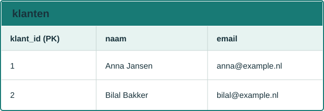
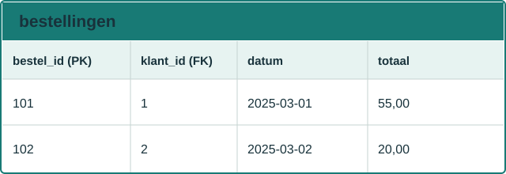
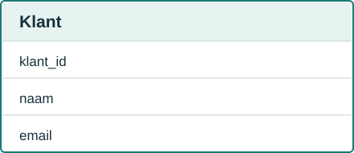
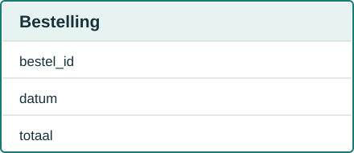
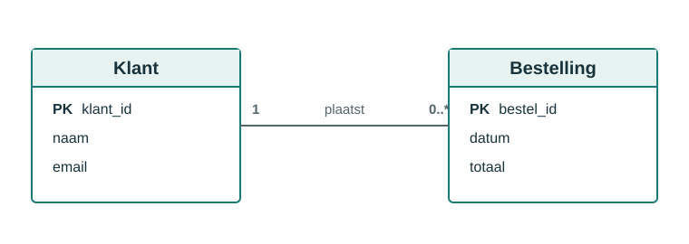
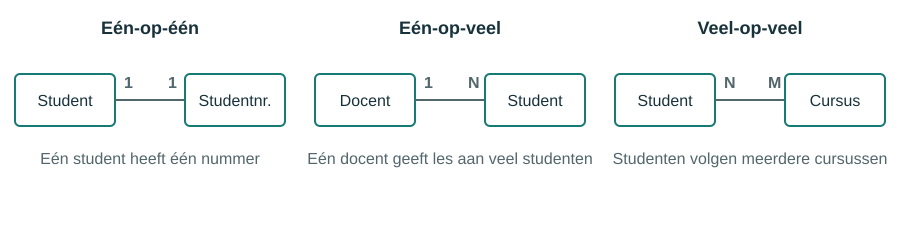

Welkom bij de cursus Databases
Deze website helpt je om databases te leren kennen, ontwerpen en gebruiken. In deze cursus bekijken we hoe je gegevens op een gestructureerde manier opslaat, hoe je die met SQL bevraagt en hoe je een goed databaseontwerp maakt. Kies een hoofdstuk in de navigatie om te starten!
Inleiding
Wat is een database?
Een database is een gestructureerde verzameling van gegevens die centraal wordt opgeslagen, beheerd en opgevraagd. In plaats van informatie verspreid over verschillende bestanden, Excel-sheets of papieren formulieren te bewaren, zet je die gegevens in een database. Zo kun je ze snel en betrouwbaar opzoeken, aanpassen en analyseren.
Bij een database worden gegevens meestal georganiseerd in tabellen. Elke tabel bestaat uit rijen en kolommen:
- Een rij is een record: één compleet gegevenselement, bijvoorbeeld één klant of één bestelling.
- Een kolom is een veld: een eigenschap zoals naam, e-mailadres of datum.
- Een primaire sleutel is een uniek identificatienummer of veld dat elke rij in een tabel onderscheidt.
- Een relatie beschrijft hoe verschillende tabellen aan elkaar gekoppeld zijn.
Een eenvoudig voorbeeld:


Hiermee kun je bijvoorbeeld zien welke klant een bepaalde bestelling heeft geplaatst. Dat is precies waar databases goed in zijn: verbanden tussen gegevens vastleggen en op een gecontroleerde manier beheren.
Waarom gebruiken we databases?
Databases worden gebruikt omdat ze veel voordelen bieden boven het handmatig bewaren van gegevens in losse documenten of spreadsheets.
Belangrijkste voordelen
- Snel zoeken en ophalen van gegevens
- Eenvoudig opslaan van grote hoeveelheden informatie
- Controle op consistentie en volledigheid van gegevens
- Meerdere gebruikers kunnen tegelijk toegang krijgen tot dezelfde gegevens
- Betere beveiliging en toegangscontrole
- Back-up en herstel van gegevens bij storingen
- Reproduceerbare en gecontroleerde manipulatie van data via queries
Stel je voor dat een winkel honderden klanten, producten en bestellingen heeft. Zonder database zou je al die informatie handmatig moeten bijhouden, met veel kans op fouten, duplicaten en onoverzichtelijkheid. Een database maakt dit veel efficiënter en betrouwbaarder.
Databases zijn dus niet alleen voor grote bedrijven. Ze worden ook gebruikt in scholen, ziekenhuizen, webshops, mobiele apps, boekhoudsystemen en veel andere toepassingen.
Soorten databases
Er bestaan verschillende soorten databases, afhankelijk van het soort gegevens en het doel waarvoor ze gebruikt worden.
1. Relationele databases
Dit is het meest gebruikte type database in bedrijfstoepassingen. De gegevens worden opgeslagen in tabellen met duidelijke verbanden tussen elkaar.
Kenmerken:
- Structuur in tabellen en relaties
- Gebruikt SQL (Structured Query Language)
- Sterk geschikt voor gestructureerde gegevens
- Voorbeelden: MySQL, PostgreSQL, SQL Server, Oracle
Voorbeeld: een klantenbestand, voorraadbeheer of een boekhoudsysteem.
2. NoSQL-databases
NoSQL-databases zijn ontworpen voor grote hoeveelheden data en minder strikt gestructureerde informatie. Ze worden vaak gebruikt bij webservices, realtime apps en grote datameren.
Kenmerken:
- Flexibelere opslag van gegevens
- Niet noodzakelijk in tabellen zoals bij relationele databases
- Vaak gebruikt voor documenten, sleutel-waardeparen of grafieken
- Voorbeelden: MongoDB, Redis, Cassandra
3. Andere soorten databases
Er zijn ook databases die speciaal zijn gemaakt voor specifieke doelen, zoals:
- Objectgeoriënteerde databases
- Grafdatabases voor netwerken en relaties
- Tijdreeksdatabases voor metingen en logs
- In-memory databases voor zeer snelle verwerking
Wat gaan we in deze cursus leren?
In deze cursus focussen we ons vooral op relationele databases en SQL. Je leert onder andere:
- hoe databases zijn opgebouwd;
- hoe je tabellen en relaties modelleert;
- hoe je gegevens opvraagt met SQL;
- hoe je data toevoegt, wijzigt en verwijdert;
- hoe je transacties, indexen en normalisatie begrijpt.
Databases vormen de basis van veel moderne softwareapplicaties. Als je begrijpt hoe gegevens worden opgeslagen en opgehaald, kun je beter werken met applicaties, rapportages, analyses en softwareontwikkeling in het algemeen.
In deze cursus gaan we vooral dieper in op relationele databases, omdat deze het meest gebruikt worden in bedrijfssystemen en softwareontwikkeling.
Leerdoel
Aan het einde van dit hoofdstuk kun je:
- uitleggen wat een database is;
- benoemen waarom databases belangrijk zijn;
- onderscheid maken tussen verschillende soorten databases;
- een eenvoudig voorbeeld van tabellen en relaties herkennen.
Kernbegrippen
- Database: een georganiseerde verzameling van gegevens
- Tabel: een verzameling records met dezelfde structuur
- Rij: één record of één item
- Kolom: één eigenschap van een record
- Relatie: een verband tussen tabellen
Belangrijk om te onthouden
- Gegevens moeten logisch opgeslagen worden.
- Herhaling van data kost ruimte en kan fouten veroorzaken.
- Relaties maken een database veel krachtiger dan losse bestanden.
Oefenopdrachten
- Noem drie redenen waarom een bedrijf een database gebruikt in plaats van gegevens in Excel of losse bestanden op te slaan.
- Leg in je eigen woorden uit wat het verschil is tussen een tabel, een rij en een kolom. Geef daarbij een concreet voorbeeld met klanten en bestellingen.
Relationele modellen
Tabellen, rijen en kolommen
Een relationeel model is een manier om data te organiseren in tabellen. Elke tabel vertegenwoordigt een bepaald soort informatie, zoals klanten, producten of bestellingen.
Een tabel bestaat uit:
- kolommen: de eigenschappen van de gegevens;
- rijen: de individuele records;
- een duidelijke naam en structuur.
Voorbeeld:
CREATE TABLE klanten (
klant_id INT,
naam VARCHAR(100),
email VARCHAR(100)
);
Hierbij is:
klant_ideen kolom;- een specifieke klant een rij;
naamenemaileigenschappen van die klant.
Het grote voordeel van relationele modellen is dat gegevens logisch georganiseerd worden, waardoor ze beter te beheren, op te vragen en te koppelen zijn.
Primaire sleutels
Een primaire sleutel is een kolom of combinatie van kolommen die elke rij in een tabel uniek maakt. Hiermee kun je elke record precies identificeren.
Voorbeeld:
CREATE TABLE klanten (
klant_id INT PRIMARY KEY,
naam VARCHAR(100),
email VARCHAR(100)
);
Hier is klant_id de primaire sleutel. Geen twee klanten kunnen dezelfde klant_id hebben.
Waarom is dit belangrijk?
- Je kunt één record uniek terugvinden.
- Je voorkomt dubbele gegevens.
- Je kunt andere tabellen verwijzen naar dezelfde rij.
Vreemde sleutels
Een vreemde sleutel is een kolom in een tabel die verwijst naar de primaire sleutel van een andere tabel. Hiermee leg je relaties tussen tabellen vast.
Voorbeeld:
CREATE TABLE bestellingen (
bestel_id INT PRIMARY KEY,
klant_id INT,
totaal DECIMAL(10,2),
FOREIGN KEY (klant_id) REFERENCES klanten(klant_id)
);
Hier verwijst klant_id in bestellingen naar klant_id in klanten. Dat betekent dat elke bestelling gekoppeld is aan een bestaande klant.
Vreemde sleutels helpen om:
- gegevensintegriteit te waarborgen;
- relaties tussen tabellen te modelleren;
- consistente en betrouwbare databases te bouwen.
Een relationeel model werkt dus vooral door tabellen te koppelen aan elkaar via primaire en vreemde sleutels.
In één oogopslag
Een relationeel model bestaat uit:
- tabellen;
- kolommen;
- rijen;
- primaire sleutels;
- vreemde sleutels;
- relaties tussen tabellen.
Voorbeeld
| klanten | bestellingen | |||
|---|---|---|---|---|
| klant_id | naam | bestel_id | ||
| 1 | Anna | anna@x.nl | 101 | |
| 2 | Bob | bob@x.nl | 102 |
De kolom klant_id in bestellingen verwijst naar klant_id in klanten.
Belangrijk om te onthouden
- Een primaire sleutel maakt een rij uniek.
- Een vreemde sleutel koppelt tabellen aan elkaar.
- Relaties houden de data consistent.
Oefenopdrachten
- Maak een eenvoudig relationeel model voor een bibliotheek met de tabellen
ledenenuitleningen. Bepaal welke kolommen en welke primaire sleutel je nodig hebt. - Leg uit waarom een
FOREIGN KEYnodig is in een tabel alsuitleningenverwijst naarleden. Wat gebeurt er als een lid wordt verwijderd?
ER-diagrammen
Entiteiten en attributen
Een ER-diagram (Entity-Relationship diagram) is een visuele manier om een database te modelleren. Het laat zien welke soorten gegevens er zijn en hoe deze met elkaar samenhangen.
Belangrijkste begrippen:
- entiteit: een object of concept uit de werkelijkheid, zoals
klant,productofbestelling; - attribuut: een eigenschap van een entiteit, zoals
naam,emailofprijs; - relatie: de verbinding tussen entiteiten.
Voorbeeld:


Deze entiteiten zijn niet zomaar los van elkaar; ze hebben een betekenisvolle relatie: een klant plaatst een bestelling.
Relaties tussen entiteiten
Relaties beschrijven hoe twee entiteiten met elkaar verbonden zijn. Hierbij kun je denken aan:
- één-op-veel;
- veel-op-veel;
- één-op-één.
Voorbeeld:
- één klant kan meerdere bestellingen plaatsen;
- elke bestelling hoort bij één klant.
Dus de relatie tussen Klant en Bestelling is een één-op-veel-relatie.

ER-diagrammen maken dit inzichtelijk zonder dat je meteen te maken hebt met SQL of technische details.
Cardinaliteit
Cardinaliteit beschrijft hoeveel records van de ene entiteit kunnen samenhangen met hoeveel records van een andere entiteit.
Voorbeelden:
- één-op-één: één student heeft één studentnummer;
- één-op-veel: één docent geeft les aan meerdere studenten;
- veel-op-veel: meerdere studenten volgen meerdere cursussen.
Bij ER-modelleren wordt cardinaliteit vaak weergegeven met symbolen die aangeven hoeveel exemplaren er maximaal aan elkaar gekoppeld kunnen zijn.

Dit is belangrijk omdat de juiste relaties bepalen hoe je de tabellen in een database gaat structureren.
Een ER-diagram is een blauwdruk voor de database: het laat zien wat de data betekent en hoe de verschillende delen van het model met elkaar verbonden zijn.
In één oogopslag
- Entiteit = object of concept
- Attribuut = eigenschap van een entiteit
- Relatie = verband tussen entiteiten
- Cardinaliteit = hoeveel records ermee samenhangen
Mini-voorbeeld
Relatie: één klant kan meerdere bestellingen plaatsen.
Visuele gedachtegang
Voordat je SQL schrijft, moet je eerst begrijpen wat de echte gegevens zijn en hoe ze samenhangen. Een ER-diagram helpt je dat te zien zonder direct in SQL te denken.
Oefenopdrachten
- Teken of beschrijf een ER-diagram voor een winkel met de entiteiten
klant,bestellingenproduct. Geef aan welke relaties er zijn. - Wat is het verschil tussen een entiteit en een attribuut? Geef voor beide een voorbeeld uit een schooldatabase.
SQL basis
SELECT
SELECT wordt gebruikt om gegevens uit een database op te halen. Het is waarschijnlijk het meest gebruikte SQL-commando.
Basisvoorbeeld:
SELECT *
FROM klanten;
Deze query geeft alle kolommen en alle rijen uit de tabel klanten terug.
Als je alleen bepaalde kolommen wilt zien:
SELECT naam, email
FROM klanten;
Je kunt ook voorwaarden toevoegen met WHERE:
SELECT naam, email
FROM klanten
WHERE klant_id = 1;
Met ORDER BY kun je resultaten sorteren:
SELECT naam, email
FROM klanten
ORDER BY naam ASC;
INSERT
INSERT wordt gebruikt om nieuwe records aan een tabel toe te voegen.
Basisvoorbeeld:
INSERT INTO klanten (naam, email)
VALUES ('Anna', 'anna@example.com');
Je kunt meerdere records tegelijk invoegen:
INSERT INTO klanten (naam, email)
VALUES
('Bob', 'bob@example.com'),
('Celine', 'celine@example.com');
UPDATE
UPDATE wordt gebruikt om bestaande gegevens te wijzigen.
Voorbeeld:
UPDATE klanten
SET email = 'nieuw@email.com'
WHERE klant_id = 1;
Hierbij wordt alleen de klant met klant_id = 1 aangepast. Zonder WHERE zouden alle records worden gewijzigd.
DELETE
DELETE wordt gebruikt om records uit een tabel te verwijderen.
Voorbeeld:
DELETE FROM klanten
WHERE klant_id = 1;
Let op: ook hier is WHERE belangrijk. Zonder WHERE zouden alle gegevens uit de tabel worden verwijderd.
Samenvatting
De basisbewerkingen in SQL zijn:
SELECT: gegevens lezenINSERT: gegevens toevoegenUPDATE: gegevens aanpassenDELETE: gegevens verwijderen
Deze vier opdrachten vormen de kern van het werken met relationele databases.
In één oogopslag
SELECT= lees gegevensINSERT= voeg gegevens toeUPDATE= wijzig gegevensDELETE= verwijder gegevens
Snel overzicht
| Commando | Doel | Voorbeeld |
|---|---|---|
SELECT |
Gegevens ophalen | SELECT * FROM klanten; |
INSERT |
Nieuwe gegevens toevoegen | INSERT INTO klanten ... |
UPDATE |
Bestaande gegevens aanpassen | UPDATE klanten SET ... |
DELETE |
Gegevens verwijderen | DELETE FROM klanten WHERE ... |
Oefenopdrachten
- Schrijf een query die van alle klanten alleen de naam en e-mailadres toont, gesorteerd op naam van A tot Z.
- Voeg twee nieuwe klanten toe aan de tabel
klantenen wijzig daarna het e-mailadres van één van die klanten. Verwijder daarna de klant die je als tweede hebt toegevoegd.
Joins
INNER JOIN
Een INNER JOIN retourneert alleen de records die aan beide tabellen voldoen. Met andere woorden: je krijgt alleen de combinaties die bestaan in beide tabellen.
Voorbeeld:
SELECT klanten.naam, bestellingen.bestel_id
FROM klanten
INNER JOIN bestellingen ON klanten.klant_id = bestellingen.klant_id;
Deze query laat alleen klanten zien die daadwerkelijk een bestelling hebben geplaatst.
LEFT JOIN
Een LEFT JOIN geeft alle records uit de linker tabel terug, zelfs als er geen overeenkomst in de rechter tabel bestaat. De rechter waarden zijn dan NULL.
Voorbeeld:
SELECT klanten.naam, bestellingen.bestel_id
FROM klanten
LEFT JOIN bestellingen ON klanten.klant_id = bestellingen.klant_id;
Hier zie je alle klanten, ook die nog geen bestelling hebben gedaan.
RIGHT JOIN
Een RIGHT JOIN werkt precies andersom: alle records uit de rechter tabel worden getoond, zelfs als er geen overeenkomst in de linker tabel is.
Voorbeeld:
SELECT klanten.naam, bestellingen.bestel_id
FROM klanten
RIGHT JOIN bestellingen ON klanten.klant_id = bestellingen.klant_id;
Deze query toont alle bestellingen, zelfs als er geen klantrecord gekoppeld is.
Wanneer gebruik je welke join?
INNER JOIN: alleen overeenkomende gegevensLEFT JOIN: alles uit de linker tabel + overeenkomende gegevens uit de rechter tabelRIGHT JOIN: alles uit de rechter tabel + overeenkomende gegevens uit de linker tabel
Joins zijn essentieel in relationele databases, omdat ze gegevens uit verschillende tabellen combineren op basis van hun relatie.
Snel vergelijken
| Join-type | Wat krijg je terug? |
|---|---|
INNER JOIN |
Alleen records die in beide tabellen voorkomen |
LEFT JOIN |
Alle records uit de linker tabel, ook zonder match |
RIGHT JOIN |
Alle records uit de rechter tabel, ook zonder match |
Denk aan het voorbeeld
klantenis de linker tabelbestellingenis de rechter tabel- de join gebeurt op
klant_id
Als je wilt weten welke klanten bestellingen hebben, gebruik je meestal een LEFT JOIN of INNER JOIN.
Oefenopdrachten
- Schrijf een query met een
INNER JOINdie alle klanten toont samen met hun bestellingen. - Geef aan welk type join je gebruikt als je alle klanten wilt tonen, ook als ze nog geen bestelling hebben gemaakt. Waarom is dat handig?
Normalisatie
Waarom normaliseren?
Normalisatie is het organiseren van gegevens in een database zodat redundantie wordt verminderd en de consistentie wordt verbeterd. Met andere woorden: je wilt voorkomen dat dezelfde informatie meerdere keren in verschillende tabellen verschijnt.
Een ongeorganiseerde database kan leiden tot:
- dubbele informatie;
- inconsistenties;
- meer onderhoud nodig bij wijzigingen;
- moeilijkere queries en analyses.
Door normalisatie te gebruiken, verdeel je gegevens logisch over passende tabellen. Daardoor wordt de database overzichtelijker en beter te onderhouden.
Eerste normaalvorm (1NF)
Een tabel is in de eerste normaalvorm als:
- elke kolom een enkelvoudige waarde bevat;
- er geen herhaalde groepen aanwezig zijn;
- elke rij uniek identificeerbaar is.
Voorbeeld van een tabel die niet voldoet aan 1NF:
| klant_id | naam | hobby's |
|---|---|---|
| 1 | Anna | tennis, zwemmen |
Hier staat meerdere informatie in één veld (hobby's). In 1NF zou je dit opsplitsen in meerdere records of een aparte tabel.
Tweede normaalvorm (2NF)
Een tabel is in de tweede normaalvorm als:
- deze voldoet aan 1NF;
- alle niet-sleutelvelden volledig afhankelijk zijn van de primaire sleutel.
Dit is vooral relevant als een tabel een samengestelde sleutel heeft. Als een veld alleen afhankelijk is van een deel van die sleutel, is er sprake van overbodige gegevens.
Voorbeeld:
Een orderregel tabel bevat order_id, product_id, product_naam en prijs. Hier hangt product_naam alleen af van product_id, niet van order_id. Dat is een teken dat de structuur nog niet optimaal is.
Derde normaalvorm (3NF)
Een tabel is in de derde normaalvorm als:
- deze voldoet aan 2NF;
- geen niet-sleutelveld afhankelijk is van een ander niet-sleutelveld.
Met andere woorden: je mag geen informatie opslaan die eigenlijk al ergens anders in de database staat en afgeleid kan worden uit andere velden.
Voorbeeld:
Als je in een klantenbestand zowel stad als postcode opslaat, en stad af te leiden is uit postcode, dan is dat geen goede normalisatie. Je bewaart dan informatie die niet onafhankelijk is.
Samenvatting
Normalisatie helpt bij:
- minder redundantie;
- betere data-integriteit;
- eenvoudigere onderhoudbaarheid;
- duidelijkere structuur.
De kernidee is dat elke informatie op één logische plaats wordt opgeslagen, in plaats van meerdere keren in de database te herhalen.
Snel overzicht
| Normaalvorm | Doel | Denk aan |
|---|---|---|
| 1NF | Geen herhaalde groepen | Eén waarde per veld |
| 2NF | Geen afhankelijkheid van een deel van een samengestelde sleutel | Logische onderverdeling |
| 3NF | Geen afhankelijke niet-sleutelvelden | Geen overbodige informatie |
Tip
Normalisatie is niet bedoeld om de database ingewikkelder te maken, maar om de data juist en logisch te houden.
Oefenopdrachten
- Noem twee redenen waarom normalisatie belangrijk is bij het ontwerpen van een database. Geef een voorbeeld van een probleem dat ontstaat zonder normalisatie.
- Bekijk een tabel met
klant_id,klant_naam,postcodeenstad. Leg uit waarom deze tabel mogelijk niet voldoet aan de derde normaalvorm.
Indexen en performantie
Wat is een index?
(Nog aan te vullen)
Wanneer gebruik je een index?
(Nog aan te vullen)
Snel overzicht
- Index = snelle zoekroute naar data
- Gebruik je vooral op kolommen die vaak gefilterd of gesorteerd worden
- Te veel indexen kunnen ook vertragen bij inserts en updates
Belangrijk om te onthouden
Een index verbetert vaak leesopdrachten, maar kost extra ruimte en onderhoud. Daarom gebruik je hem slim, niet overal.
Oefenopdrachten
- Leg uit in je eigen woorden wat een index in een database doet en waarom deze de queryprestaties kan verbeteren.
- Geef een voorbeeld van een tabel waarin het nuttig is om een index te gebruiken en beschrijf welke kolom je hiervoor zou indexeren.
Transacties
Wat is een transactie?
Een transactie is een reeks databasebewerkingen die als één geheel uitgevoerd worden. Als één onderdeel van de transactie mislukt, dan worden de andere wijzigingen vaak ook teruggedraaid.
Voorbeeld:
BEGIN;
UPDATE rekeningen SET saldo = saldo - 100 WHERE klant_id = 1;
UPDATE rekeningen SET saldo = saldo + 100 WHERE klant_id = 2;
COMMIT;
Als deze twee updates succesvol uitgevoerd worden, is de transactie afgerond. Als er iets fout gaat, kun je in plaats daarvan ROLLBACK gebruiken om alles terug te draaien.
Transacties zijn belangrijk in situaties waar gegevens altijd consistent moeten blijven, bijvoorbeeld bij banktransacties of orderverwerking.
ACID-eigenschappen
ACID staat voor:
- Atomicity: een transactie is volledig of helemaal niet.
- Consistency: de database blijft in een geldige toestand.
- Isolation: transacties kunnen gelijktijdig plaatsvinden zonder elkaar te verstoren.
- Durability: als een transactie is bevestigd, blijft deze ook bij een storing behouden.
Uitleg
- Atomicity: als een opdracht in de transactie faalt, wordt alles teruggedraaid.
- Consistency: de gegevensregels blijven geldig, zoals primaire sleutels en vreemde sleutels.
- Isolation: een andere transactie ziet de wijzigingen niet half afgerond.
- Durability: na
COMMITblijven de wijzigingen bewaard, zelfs bij crash of stroomuitval.
ACID is een belangrijk concept in relationele databases omdat het zorgt voor betrouwbaarheid en veiligheid bij het verwerken van data.
ACID in één oogopslag
- Atomicity: alles of niets
- Consistency: database blijft geldig
- Isolation: transacties zijn gescheiden
- Durability: bevestigde wijzigingen blijven staan
Praktisch voorbeeld
BEGIN;
UPDATE rekeningen SET saldo = saldo - 100 WHERE klant_id = 1;
UPDATE rekeningen SET saldo = saldo + 100 WHERE klant_id = 2;
COMMIT;
Als één update mislukt, gebruik je ROLLBACK om beide wijzigingen terug te draaien.
Oefenopdrachten
- Leg uit waarom een banktransactie als een transactie in SQL moet worden uitgevoerd. Wat gebeurt er als één van de twee updates faalt?
- Noem de vier ACID-eigenschappen en geef voor elk een kort voorbeeld uit de praktijk.
Praktijkcases
(Nog aan te vullen)
Denk in modellen
Bij een praktijkcase is het handig om eerst te vragen:
- Welke entiteiten heb ik nodig?
- Welke eigenschappen horen daarbij?
- Hoe zijn die entiteiten met elkaar verbonden?
- Welke informatie moet ik op een logische plaats bewaren?
Voorbeeldcase
Een schooldatabase kan bestaan uit:
studentencursusseninschrijvingen
Hiermee kun je zien welke student welke cursus volgt.
Oefenopdrachten
- Ontwerp een kleine database voor een webshop met klanten, producten en bestellingen. Noem de belangrijkste tabellen en relaties.
- Beschrijf een praktijkcase uit een school, ziekenhuis of bedrijf waarin je een relationele database zou gebruiken. Leg uit waarom deze structuur geschikt is.